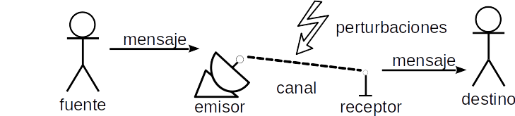

Sistema de comunicación¶
Modelo de comunicación desarrollado por Shannon¶
El modelo propuesto por Shannon es un sistema general de la comunicación que parte de una fuente desde la cual, a través de un emisor, se emite una señal, la cual viaja por un canal, pero a lo largo de su viaje puede ser interferida por perturbaciones. La señal sale del canal, llega a un receptor que decodifica la información convirtiéndola posteriormente en mensaje que pasa a un destinatario